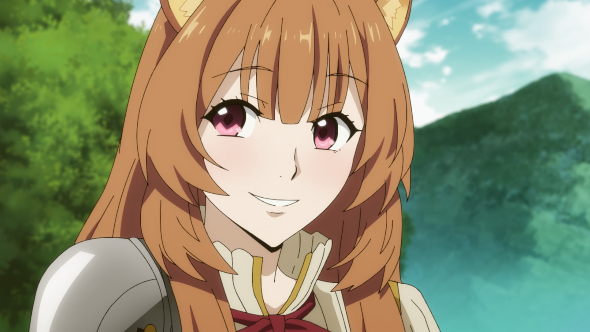
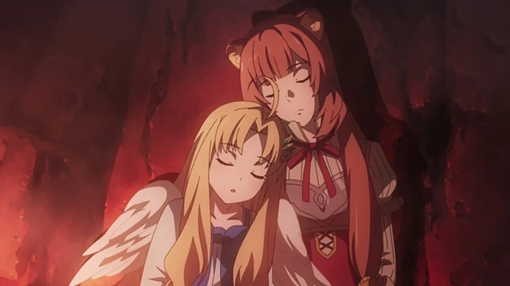

Well, let's start this. Raphtalia. Before I start saying mean
stuff, let me just say, i don't truly hate her, in fact I love this chick. Not in that way. But she's cool,
Her presence is sometimes needed. Infact, when I first started watching Rising of a Shield Hero, I
needed her in a shot to keep me motivated. And yes, I'm an anime addict if you couldn't tell by now.
Raphtalia, was and still is an awesome character in the show. She has been solidified as a symbol
of the how itself. of the MC, who i'm too lazy to recall and of Filo, who in my opinion is perfect all round,
well... not really but as i was trying to say, i don't hate them. I just need something to rant about
and I do have some issues to address about them. Yes, Them, Filo included.
Just Why Filo?
Keeping in mind what I said above, let's start my rant. and we're targeting Filo first. To be honest, I've only noticed this a little bit ago but I have a thing against the constant master calling in the show.
But let me explain first.Sooo basically, in the rise of a shield hero, the MC, who I'm too lazy to recall befriends Raphtalia and Filo. Raphtalia is a 'beast folk' as the show calls them but demi human is simpler
and Filo is... i forgot honesty but she isn't technically a demi human as she is special but that's for later.
anyways, both filo and raphtalia were accpeted into the hero's party and upon joining they were given a slave crest
and no, not for any weird kinky reason. Raphtalia was bought out of slavery by the hero as beast folk are often kidnapped and enslaved, anyways,
Our MC buys here and as such Raph is given a slave crest and the MC is appointed master over her. The slave crest can be removed
however, because they are adventuring and the slave crest acts as a tracker and because it's anime, Raph keeps the crest and is technically a slave to our MC but him being him
lets her roam and live life as if she were free. Simliary, Filo was accpeted into the hero's party, though for different reason but as far as i know, she wasn't given a slave crest.
considering she looks like an 11 year old and CPS stuff, i think that's for the better buttttt, this is where the problem starts. Filo, though being portrayed as a
a little child isn't wrong, and I have nothing against it, but it's how much they try to drill that fact into my head. that and Filo calls the MC 'master' everytime she addresses him
,which isn't gonna kill me as it's just a small thing, but sometimes, it isn't needed. Like when they have a serious mood change and the story gets serious for once,
the 'master' thing totally wrecks the mood of the story, and suspense is just kind driven away, ant hate is suppressed, any love is destroyed and after the pacing of the story is already as mess up as it is, it
just really sucks. My problem once again isn't that simple. as my problem is the fact that the writers could have easily avoided this problem. i get if they wanted her personality to be
consistent and i understand that. the master stuff and her other childish reactions and stuff don't have to stop. but is it really gonna hurt the character's rep if you take out the master every now and again?
And they don't even have to take it out. they could simply make her not talk. No wrecking her rep is she said nothing to wreck it.I get my mood swings, they get their character type.
But noooooooooooooooooooooooooooo. no,no,no i have to suffer through it every time, every single time. Also, Note, i don't hate this as much as i make it sound.
to be honest it's not even an issue it's just something i felt like ranting about. But, at least to me. I would love it if they added this quality of life change.
please. please??
Now, Raphtalia.  As I said before, I don't truly hate her, and the issue we are ranting about is so stupidly insignificant that I should be arrested for making it a problem
but, I need the content and I have nothing better to do. Raph's problem, or my problem with her is her timing and how she takes cues. This is rich coming from a person who couldn't take a hint to save their Life
but whatever. In season one and even 2, the problem we have is great . infact, she was the reason I took a break from the show for like, half my life span. What about her timing you may wonder.
well,as we know, Raph is the technically slave and official party member of the Mc who's name i'm too lazy to recall rn, which, although technically, morally, wrong, I have no problem with
it's how she uses the title and the somehow power of being the first and official slave to the Mc, to her it's like taking her first kiss which people in anime place a huge deal on
,and although it's kinda annoying how dump she is for thinking of it like that or for me thinking of it like that, I know it's totally possible to play it off perfectly
They have been anime that have the most boring of plots but do it so perfectly that you would rather watch that than anything else. the problem is, they didn't play it off like that
.For one she naive, like almost to a fault in the first seasons, then comes the problem of her 'love' for the shield hero, it's obvious she has a crush or some crap on the Mc and her not doing anything isn't pissing me Off
,it's what she does when she doesn't. for one, in private, I sense this mood change when she's with other female characters close to the Mc, secondly, she uses her slavery as some reason of power over Filo and the others
well not Filo but my point is clear, lastly her age. LOL, before you kill me let me explain. Raph in the anime starts as a child, but as she is a demi human (beast folk) she has the oh so convenient ability of fast growth and within halfway ish through season1
She is about 17 or even 20 in terms of age and somewhat mature. but her attitude doesn't change and now she just seems more like a big baby then anything else and after you get used to that
,she would randomly change to a mature adult and still hold her feelings, it's like the writers were arguing over if she would be cuter as a big baby or as a reminder that anime doesn't exist. Luckily season 2 was much better and they seemed to not be fighting over
her age anymore. But season 2 presented the new issue, Her feelings for the Mc. Raph, as i've been calling her for short. is in the same party as Filo and a few
other females and male friends alike. However, as this is an anime and a weirdly titled one at that, it's not amazing to expect some Harem attributes here and there. And nothing is wrong with that
just that, in the new season, season3. We are introduced to a new girl who the Mc healed and saved. Technically it's a pair, the bro and er sis but as anime mainly appeals to the male fantasy the girl is the one getting lovey with the hero.
In my mind once again I have nothing wrong with this, it's just how she reacts and how there is this weird feeling about how she did it. It's like she doesn't have feeling for the dude and is doing it cause...it's...logicall, which is amazing for anime but upsetting
as they painted this slow rise in affection towards the Mc and even though she annoyed me to the grave, I was invested in seeing where all this build up was going, but then you're telling me, you just dropped that
with no warning, no reasoning, and over a 14,15 max year old child getting lovey dovey with the person you have been with for almost a few years now?? To me, that was annoying and i started hating again, but after seeing that Filo drawing up top
I think I'll have to go back and watch, I was going to anyway, but the picture gave me a better reason to. As I said before, this issue isn't gonna kill me or anyone else and it isn't life changing
just something i would like in a future quality of life change. Either way. That will be it for me. For now. I need to rant about My feeling about Anime next. Stay tuned.
remember, this anime is great. I just need something to Rant about! Next up. I'm just gonna talk about ainme, Like what the hell else do I talk about?

 Simliary, Filo was accpeted into the hero's party, though for different reason but as far as i know, she wasn't given a slave crest.
considering she looks like an 11 year old and CPS stuff, i think that's for the better buttttt, this is where the problem starts. Filo, though being portrayed as a
a little child isn't wrong, and I have nothing against it, but it's how much they try to drill that fact into my head. that and Filo calls the MC 'master' everytime she addresses him
,which isn't gonna kill me as it's just a small thing, but sometimes, it isn't needed. Like when they have a serious mood change and the story gets serious for once,
the 'master' thing totally wrecks the mood of the story, and suspense is just kind driven away, ant hate is suppressed, any love is destroyed and after the pacing of the story is already as mess up as it is, it
just really sucks. My problem once again isn't that simple. as my problem is the fact that the writers could have easily avoided this problem. i get if they wanted her personality to be
consistent and i understand that. the master stuff and her other childish reactions and stuff don't have to stop. but is it really gonna hurt the character's rep if you take out the master every now and again?
And they don't even have to take it out. they could simply make her not talk. No wrecking her rep is she said nothing to wreck it.I get my mood swings, they get their character type.
But noooooooooooooooooooooooooooo. no,no,no i have to suffer through it every time, every single time. Also, Note, i don't hate this as much as i make it sound.
to be honest it's not even an issue it's just something i felt like ranting about. But, at least to me. I would love it if they added this quality of life change.
please. please??
Simliary, Filo was accpeted into the hero's party, though for different reason but as far as i know, she wasn't given a slave crest.
considering she looks like an 11 year old and CPS stuff, i think that's for the better buttttt, this is where the problem starts. Filo, though being portrayed as a
a little child isn't wrong, and I have nothing against it, but it's how much they try to drill that fact into my head. that and Filo calls the MC 'master' everytime she addresses him
,which isn't gonna kill me as it's just a small thing, but sometimes, it isn't needed. Like when they have a serious mood change and the story gets serious for once,
the 'master' thing totally wrecks the mood of the story, and suspense is just kind driven away, ant hate is suppressed, any love is destroyed and after the pacing of the story is already as mess up as it is, it
just really sucks. My problem once again isn't that simple. as my problem is the fact that the writers could have easily avoided this problem. i get if they wanted her personality to be
consistent and i understand that. the master stuff and her other childish reactions and stuff don't have to stop. but is it really gonna hurt the character's rep if you take out the master every now and again?
And they don't even have to take it out. they could simply make her not talk. No wrecking her rep is she said nothing to wreck it.I get my mood swings, they get their character type.
But noooooooooooooooooooooooooooo. no,no,no i have to suffer through it every time, every single time. Also, Note, i don't hate this as much as i make it sound.
to be honest it's not even an issue it's just something i felt like ranting about. But, at least to me. I would love it if they added this quality of life change.
please. please??
 filo.jpg)
 rat.jpg) remember, this anime is great. I just need something to Rant about! Next up. I'm just gonna talk about ainme, Like what the hell else do I talk about?
remember, this anime is great. I just need something to Rant about! Next up. I'm just gonna talk about ainme, Like what the hell else do I talk about?